Manage Local Users and Group
Membuat User
Ada beberapa perintah yang bisa digunakan untuk membuat user
-
Useradd Perintah ini akan membuat
user, namun perintah ini hanya membuat user saja tidak dengan passwordnya, sehinggauseryang dibuat dengan perintah ini tidak dapat digunakan untuk login, perintah ini juga tidak membuat homedirectory user. Untuk menambahkan/mengganti password kita dapat menggunakan perintah passwd.
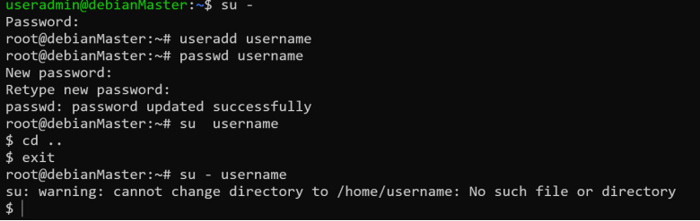 -
Adduser
- Dengan perintah ini akan membuat user, home directory, password dan juga biodata dari user tersebut.
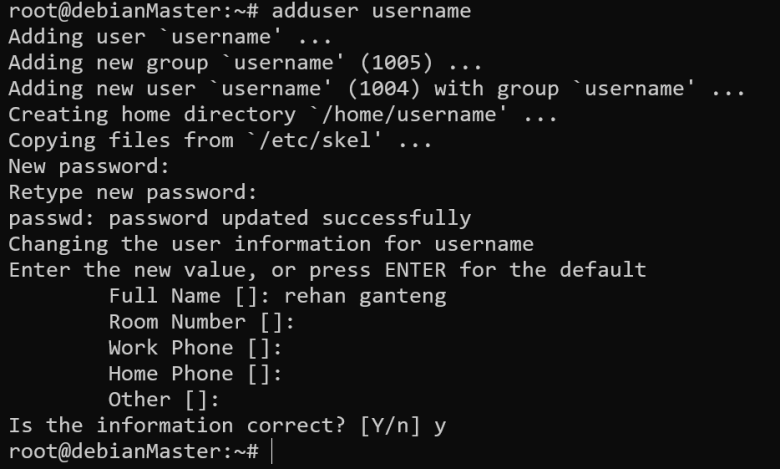 - User yang telah dibuat akan tersimpan di
/etc/passwd
Menghapus User
Untuk menghapus user kita bisa menggunakan perintah userdel
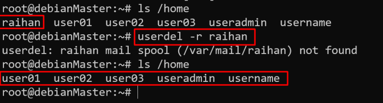
Mengganti Password user
Mengganti password dapat menggunakan perintah passwd
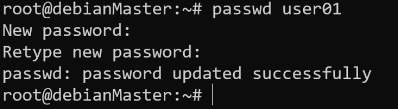
UUID Ranges
Berikut adalah Range UID yang diberikan system. - Root: 0 - System User: 1-200 - Non Ownership System User: 201-999 - Reguler User: 1000+++
Membuat Group
- Membuat group dapat dilakukan dengan perintah groupadd
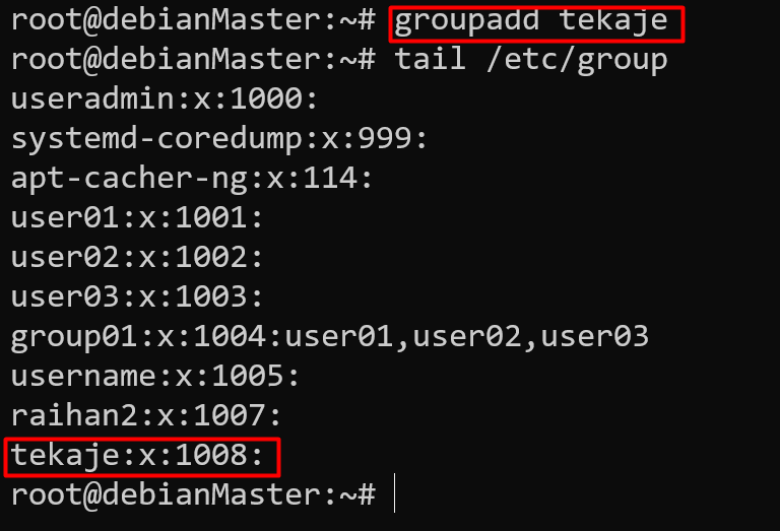 - Kita dapat memberikan
GIDcustom ketika membuat sebuah group, dengan menambahkan opsi-gpada perintah groupadd 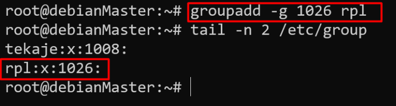 - Opsi -r akan membuat system group(group system user) menggunakan GID range yang tersimpan di /etc/login.defs yaitu pada parameter SYS_GID_MIN dan SYS_GID_MAX.
Memodifikasi groupp yang sudah dibuat
- Kita bisa menggunakan perintah groupmod untuk mengedit/modifikasi group yang sudah dibuat.
Groupmodmemiliki berbagai macam opsi, kita bisa cek dengan perintahgroupmod –help
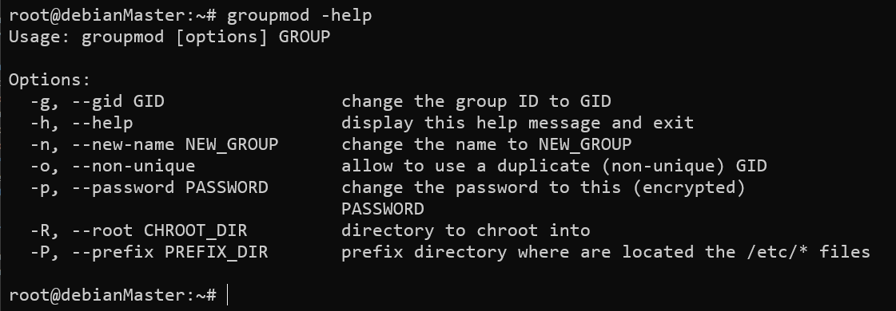 - Opsi yang umum digunakan yaitu
-gdan-n, keduanya berfungsi untuk mengubahGIDdan mengubah namagroup
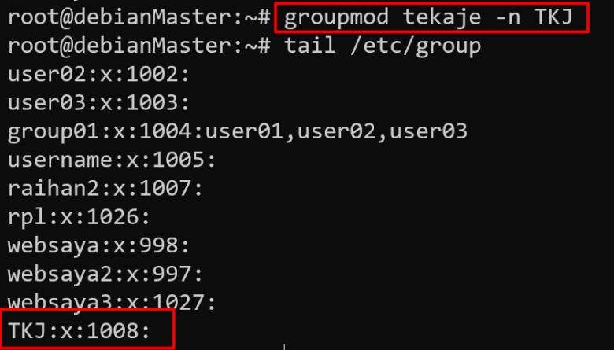
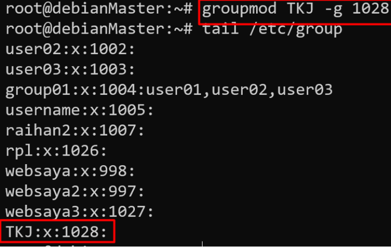
Menghapus Group
- Menghapus group dapat dilakukan dengan perintah groupdel
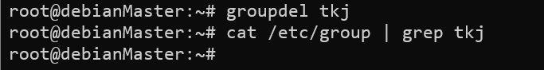
Terlihat group tkj sudah terhapus dan tidak muncul di /etc/group
Memasukkan user kedalam Group
Dengan perintah usermod -aG
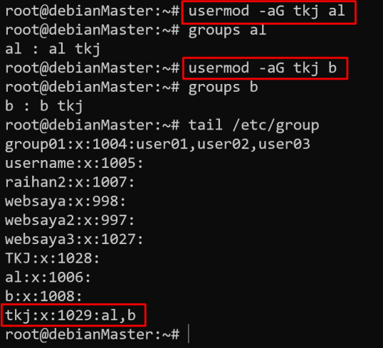
Perintah tersebut memasukkan user al dan b kedalam group tkj
Praktikum Mandiri
- Berpindah menjadi user root
- Membuat user
operator1dan verifikasi apakah telah terbuat di system
root@debianMaster:~# adduser operator1 Adding user `operator1' ... Adding new group `operator1' (1009) ... Adding new user `operator1' (1008) with group `operator1' ... Creating home directory `/home/operator1' ... Copying files from `/etc/skel' ... New password: 1234 Retype new password: 1234 passwd: password updated successfully Changing the user information for operator1 Enter the new value, or press ENTER for the default Full Name []: Room Number []: Work Phone []: Home Phone []: Other []: Is the information correct? [Y/n] y root@debianMaster:~# cat /etc/passwd | grep operator1 operator1:x:1008:1009:,,,:/home/operator1:/bin/bash - Membuat user
operator2danoperator3root@debianMaster:~# adduser operator2 Adding user `operator2' ... Adding new group `operator2' (1010) ... Adding new user `operator2' (1009) with group `operator2' ... Creating home directory `/home/operator2' ... Copying files from `/etc/skel' ... New password:1234 Retype new password:1234 passwd: password updated successfully Changing the user information for operator2 Enter the new value, or press ENTER for the default Full Name []: Room Number []: Work Phone []: Home Phone []: Other []: Is the information correct? [Y/n] y root@debianMaster:~# adduser operator3 Adding user `operator3' ... Adding new group `operator3' (1011) ... Adding new user `operator3' (1010) with group `operator3' ... Creating home directory `/home/operator3' ... Copying files from `/etc/skel' ... New password:1234 Retype new password:1234 passwd: password updated successfully Changing the user information for operator3 Enter the new value, or press ENTER for the default Full Name []: Room Number []: Work Phone []: Home Phone []: Other []: Is the information correct? [Y/n] y - Menghapus user
operator3dan juga personal data dari user tersebut. - Membuat
groupdengan namaoperatorsdengan GID30000 - Membuat
groupdengan namaadmin - Verifikasi apakah group
operators dan admintelah terbuat - Memasukkan user
operator1danoperator2kedalam groupoperators - Verifikasi apakah
operator1danoperator2telah masuk kedalam groupoperators - Buatlah user
sysadmin1,sysadmin2,sysadmin3dengan password1234 - Memasukkan user
sysadmin1,sysadmin2,sysadmin3kedalam groupadmin - verifikasi
sysadmin1,sysadmin2dansysadmin3telah tergabuung dalam groupadminroot@debianMaster:~# id sysadmin1 uid=1010(sysadmin1) gid=1011(sysadmin1) groups=1011(sysadmin1),30001(admin) root@debianMaster:~# id sysadmin2 uid=1011(sysadmin2) gid=1012(sysadmin2) groups=1012(sysadmin2),30001(admin) root@debianMaster:~# id sysadmin3 uid=1012(sysadmin3) gid=1013(sysadmin3) groups=1013(sysadmin3),30001(admin) - Membuat member group
adminsetara dengan root / dapat menggunakansudo - Masuk sebagai
sysadmin1dan verifikasi apakah user tersebut dapat menggunakansudosysadmin1@debianMaster:~$ sudo apt-get update We trust you have received the usual lecture from the local System Administrator. It usually boils down to these three things: #1) Respect the privacy of others. #2) Think before you type. #3) With great power comes great responsibility. [sudo] password for sysadmin1: Err:1 http://deb.debian.org/debian bullseye InRelease
Warning
Buat Dokumentasi pengerjaan dan upload pada Exam MySMK